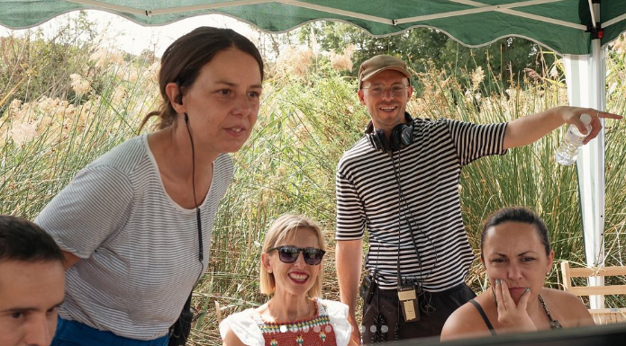
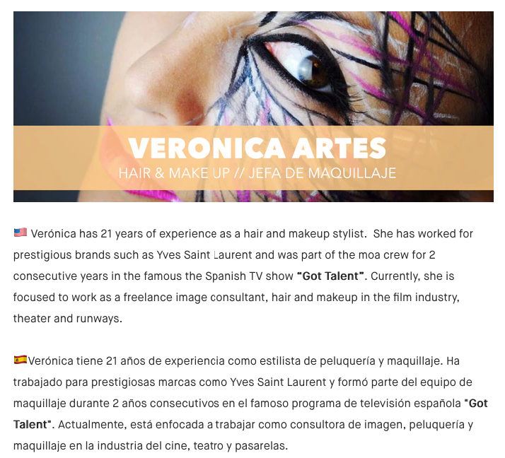

CENSURADA es un drama romántico ambientado en dos épocas diferentes (2015 y 1969). Una película donde dos narrativas paralelas se conectan a través de una misma historia.
¡Nos complace compartir una emocionante noticia para los amantes del cine y del arte del maquillaje! Próximamente, la película Censurada llegará a la gran pantalla en cines de toda España. En esta esperada producción, nuestra talentosa jefa de maquillaje, Verónica Artés, junto con su equipo de Make Up Vartiz, ha sido la mente maestra detrás de los fascinantes looks que darán vida a cada personaje en esta intensa historia.

El maquillaje en Censurada no solo realza la apariencia de los personajes, sino que los transforma, logrando reflejar sus emociones, conflictos y evolución a lo largo de la trama. El equipo de Make Up Vartiz ha trabajado meticulosamente para asegurar que cada detalle resalte en pantalla, desde caracterizaciones dramáticas hasta efectos especiales sutiles, pero impactantes.
A lo largo de esta producción, Verónica y su equipo enfrentaron grandes desafíos, experimentando con diversas técnicas y materiales para lograr un resultado impecable que ahora podremos disfrutar en los cines. Su creatividad y precisión han logrado que el maquillaje sea una parte esencial del storytelling en esta obra cinematográfica.

¡No te pierdas el estreno de Censurada! Si eres apasionado del maquillaje en el cine y la televisión, este es un momento para celebrar y valorar el increíble trabajo que hay detrás de cada pincelada. Te invitamos a seguirnos en nuestras redes sociales para más novedades y contenido exclusivo del equipo de Make Up Vartiz.